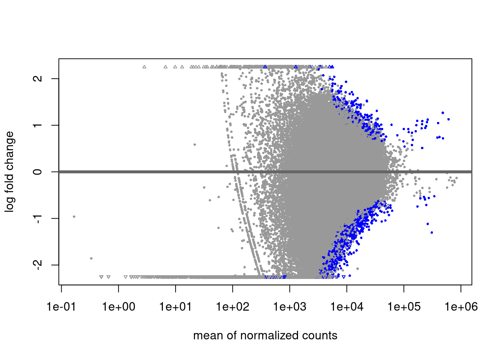

Master bins table
Carmen Navarro
2021-05-26
Last updated: 2021-07-01
Checks: 7 0
Knit directory: hesc-epigenomics/
This reproducible R Markdown analysis was created with workflowr (version 1.6.2). The Checks tab describes the reproducibility checks that were applied when the results were created. The Past versions tab lists the development history.
Great! Since the R Markdown file has been committed to the Git repository, you know the exact version of the code that produced these results.
Great job! The global environment was empty. Objects defined in the global environment can affect the analysis in your R Markdown file in unknown ways. For reproduciblity it’s best to always run the code in an empty environment.
The command set.seed(20210202) was run prior to running the code in the R Markdown file. Setting a seed ensures that any results that rely on randomness, e.g. subsampling or permutations, are reproducible.
Great job! Recording the operating system, R version, and package versions is critical for reproducibility.
Nice! There were no cached chunks for this analysis, so you can be confident that you successfully produced the results during this run.
Great job! Using relative paths to the files within your workflowr project makes it easier to run your code on other machines.
Great! You are using Git for version control. Tracking code development and connecting the code version to the results is critical for reproducibility.
The results in this page were generated with repository version ff0aec2. See the Past versions tab to see a history of the changes made to the R Markdown and HTML files.
Note that you need to be careful to ensure that all relevant files for the analysis have been committed to Git prior to generating the results (you can use wflow_publish or wflow_git_commit). workflowr only checks the R Markdown file, but you know if there are other scripts or data files that it depends on. Below is the status of the Git repository when the results were generated:
Ignored files:
Ignored: .Rhistory
Ignored: .Rproj.user/
Ignored: data/bed/
Ignored: data/bw
Ignored: data/igv/
Ignored: data/liftover/
Ignored: data/other/
Ignored: data/peaks
Ignored: data/rnaseq/
Ignored: figures_data/
Untracked files:
Untracked: data/meta/Kumar_2020_bins_panels_design.csv
Untracked: data/meta/Kumar_2020_master_bins_10kb_table_raw.tsv
Untracked: data/meta/Kumar_2020_master_bins_5kb_table_raw.tsv
Untracked: data/meta/Kumar_2020_master_bins_5kb_table_raw.zip
Untracked: data/meta/Kumar_2020_master_bins_5kb_table_replicates_only.tsv
Untracked: data/meta/Kumar_2020_master_bins_5kb_table_shrunk.tsv
Untracked: data/meta/Kumar_2020_master_bins_5kb_table_shrunk.zip
Untracked: data/meta/Kumar_2020_master_gene_table.zip
Untracked: data/meta/Kumar_2020_master_gene_table_rnaseq_shrunk.tsv
Untracked: data/meta/Kumar_2020_master_gene_table_rnaseq_shrunk_plus_annotations.tsv
Untracked: data/meta/Kumar_2020_master_gene_table_rnaseq_shrunk_plus_annotations.zip
Untracked: data/meta/Kumar_2020_promoters_panels_design.csv
Untracked: data/meta/gene_names_bivalent.tsv
Untracked: output/fig3_violin_rnaseq_ratios_naive_higher_than_pr.svg
Untracked: output/fig3_violin_rnaseq_ratios_primed_higher_than_ni.svg
Unstaged changes:
Modified: .gitignore
Note that any generated files, e.g. HTML, png, CSS, etc., are not included in this status report because it is ok for generated content to have uncommitted changes.
These are the previous versions of the repository in which changes were made to the R Markdown (analysis/master_bins_table.Rmd) and HTML (docs/master_bins_table.html) files. If you’ve configured a remote Git repository (see ?wflow_git_remote), click on the hyperlinks in the table below to view the files as they were in that past version.
| File | Version | Author | Date | Message |
|---|---|---|---|---|
| Rmd | ff0aec2 | C. Navarro | 2021-07-01 | wflow_publish(“./analysis/master_bins_table.Rmd”, verbose = T) |
This notebook shows how the master bins table is generated. Essentially, hg38 human genome is partitioned into 10000 bp windows and their mean coverage value is calculated for H3K4m3, H3K27m3 and H2AUb. DeSeq2 is applied in a Minute-ChIP specific manner and bins are annotated as differential across conditions:
- Primed vs Naïve,
- EZH2i treated Naïve vs Naïve and
- EZH2i treated Primed vs Primed.
Additionally, also a cross-comparison between H2Aub and H3K27m3 marks is done, both for Naïve state and Primed state.
Final table includes these values, fold-change differences and statistical significance scores for all genes.
Helper functions
calculate_results <- function(diff, shrink, pval) {
diff_lfc <- NULL
if (shrink == TRUE) {
diff_lfc <- lfcShrink(diff, coef="condition_Primed_vs_Naive", type="apeglm")
} else {
diff_lfc <- results(diff, alpha = pval)
}
diff_lfc
}
make_diff_df <- function(diff_lfc, loci, prefix) {
df_diff <- data.frame(diff_lfc)
# DS stands for DeSeq
colnames(df_diff) <- paste(prefix, colnames(df_diff), sep = "_")
# df_diff$name <- rownames(df_diff)
cbind(data.frame(loci)[, c("seqnames", "start", "end", "strand")], df_diff)
}
make_label <- function(fnames) {
labs <- gsub("_pooled.hg38.*scaled.bw", "", basename(fnames))
# Remove the uncomfortable . in EZH2i elements
labs <- gsub("-", "_", labs)
labs <- gsub("H9_", "", labs)
paste(labs, "mean_cov", sep = "_")
}
make_label2 <- function(fnames) {
labs <- gsub(".hg38.*scaled.bw", "", basename(fnames))
# Remove the uncomfortable . in EZH2i elements
labs <- gsub("-", "_", labs)
labs <- gsub("H9_", "", labs)
paste(labs, "mean_cov", sep = "_")
}
gr_cbind <- function(lociset) {
mcols_df <- function(gr) { data.frame(mcols(gr)) }
dfs <- lapply(lociset, mcols_df)
values <- dfs %>% reduce(cbind)
cbind(data.frame(lociset[[1]])[, c("seqnames", "start", "end", "strand")], values)
}
diff_analysis <- function(bwfiles_c1, bwfiles_c2, gr, name_c1, name_c2, shrink, pval) {
c1 <- bw_loci(bwfiles_c1, bins_gr)
c2 <- bw_loci(bwfiles_c2, bins_gr)
diff <- bw_granges_diff_analysis(c1, c2, "Naive", "Primed",
estimate_size_factors = FALSE)
diff_lfc <- calculate_results(diff, shrink, pval)
diff_lfc
}Config analysis
get_bw_files <- function(pattern) {
bwdir <- file.path(params$datadir, "bw/Kumar_2020")
list.files(bwdir, pattern = pattern, full.names = T)
}
bivalent_gr <- import(file.path(params$datadir, "bed/Bivalent_Court2017.hg38.bed"))
bins_gr <- build_bins(bin_size = params$bin_size, genome = "hg38")
# Subsample for testing
# bins_gr <- sort(bins_gr[sample(1:length(bins_gr), 2000), ])
bwfiles <-
list(
k4_naive = get_bw_files("H3K4m3_H9_Ni_rep[1-3].hg38.scaled.bw"),
k4_naive_ezh2i = get_bw_files("H3K4m3_H9_Ni-EZH2i_rep[1-3].hg38.scaled.bw"),
k4_primed = get_bw_files("H3K4m3_H9_Pr_rep[1-3].hg38.scaled.bw"),
k4_primed_ezh2i = get_bw_files("H3K4m3_H9_Pr-EZH2i_rep[1-3].hg38.scaled.bw"),
k27_naive = get_bw_files("H3K27m3_H9_Ni_rep[1-3].hg38.scaled.bw"),
k27_primed = get_bw_files("H3K27m3_H9_Pr_rep[1-3].hg38.scaled.bw"),
ub_naive = get_bw_files("H2Aub_H9_Ni_rep[1-3].hg38.scaled.bw"),
ub_naive_ezh2i = get_bw_files("H2Aub_H9_Ni-EZH2i_rep[1-3].hg38.scaled.bw"),
ub_primed = get_bw_files("H2Aub_H9_Pr_rep[1-3].hg38.scaled.bw"),
ub_primed_ezh2i = get_bw_files("H2Aub_H9_Pr-EZH2i_rep[1-3].hg38.scaled.bw"),
in_naive = get_bw_files("IN_H9_Ni.*rep[1-3].hg38.*.bw"),
in_naive_ezh2i = get_bw_files("IN_H9_Ni-EZH2i.*rep[1-3].hg38.*.bw"),
in_primed = get_bw_files("IN_H9_Pr_rep[1-3].hg38.*.bw"),
in_primed_ezh2i = get_bw_files("IN_H9_Pr-EZH2i.*rep[1-3].hg38.*.bw")
)
bwfiles_pooled <-
list(
k4 = get_bw_files("H3K4m3.*pooled.hg38.scaled.*"),
k27 = get_bw_files("H3K27m3.*pooled.hg38.scaled.*"),
ub = get_bw_files("H2Aub.*pooled.hg38.scaled.*"),
input = get_bw_files("IN.*pooled.hg38.*")
)Raw pooled values at bins
pooled_k4 <- bw_loci(bwfiles_pooled$k4, bins_gr, labels = make_label(bwfiles_pooled$k4))
pooled_k27 <- bw_loci(bwfiles_pooled$k27, bins_gr, labels = make_label(bwfiles_pooled$k27))
pooled_h2aub <- bw_loci(bwfiles_pooled$ub, bins_gr, labels = make_label(bwfiles_pooled$ub))
pooled_inp <- bw_loci(bwfiles_pooled$input, bins_gr, labels = make_label(bwfiles_pooled$input))
pooled_df <- gr_cbind(list(pooled_k4, pooled_k27, pooled_h2aub, pooled_inp))
master_df <- pooled_dfRaw replicates values at bins
reps_df <- bw_loci(unname(unlist(bwfiles)), loci = bins_gr, labels = make_label2(unname(unlist(bwfiles))))
# In case we want the replicates as well in the master table
master_df <- gr_cbind(list(pooled_k4, pooled_k27, pooled_h2aub, pooled_inp, reps_df))K27m3 diff analysis
Primed vs Naive
diff_lfc <- diff_analysis(
bwfiles$k27_naive,
bwfiles$k27_primed,
bins_gr,
"Naive",
"Primed",
params$shrink,
params$pval_cutoff
)
plotMA(diff_lfc)df_diff <- make_diff_df(diff_lfc, bins_gr, "H3K27m3_DS_Pr_vs_Ni")
master_df <- cbind(master_df, df_diff[, c(5:length(colnames(df_diff)))])EZH2i vs Naive and primed
These are skipped, as EZH2i treatment wipes all H3K27me3 so it does not make any sense to do the differential analysis in this context.
H3K4m3 diff analysis
Primed vs Naive
diff_lfc <- diff_analysis(
bwfiles$k4_naive,
bwfiles$k4_primed,
bins_gr,
"Naive",
"Primed",
params$shrink,
params$pval_cutoff
)
plotMA(diff_lfc)
df_diff <- make_diff_df(diff_lfc, bins_gr, "H3K4m3_DS_Pr_vs_Ni")
master_df <- cbind(master_df, df_diff[, c(5:length(colnames(df_diff)))])EZH2i vs Naive
diff_lfc <- diff_analysis(
bwfiles$k4_naive,
bwfiles$k4_naive_ezh2i,
bins_gr,
"Naive",
"EZH2i",
params$shrink,
params$pval_cutoff
)
plotMA(diff_lfc)df_diff <- make_diff_df(diff_lfc, bins_gr, "H3K4m3_DS_EZH2i_vs_Ni")
master_df <- cbind(master_df, df_diff[, c(5:length(colnames(df_diff)))])EZH2i vs Primed
diff_lfc <- diff_analysis(
bwfiles$k4_primed,
bwfiles$k4_primed_ezh2i,
bins_gr,
"Primed",
"EZH2i",
params$shrink,
params$pval_cutoff
)
plotMA(diff_lfc)df_diff <- make_diff_df(diff_lfc, bins_gr, "H3K4m3_DS_EZH2i_vs_Pr")
master_df <- cbind(master_df, df_diff[, c(5:length(colnames(df_diff)))])H2AUb diff analysis
Primed vs Naive
diff_lfc <- diff_analysis(
bwfiles$ub_naive,
bwfiles$ub_primed,
bins_gr,
"Naive",
"Primed",
params$shrink,
params$pval_cutoff
)
plotMA(diff_lfc)df_diff <- make_diff_df(diff_lfc, bins_gr, "H2Aub_DS_Pr_vs_Ni")
master_df <- cbind(master_df, df_diff[, c(5:length(colnames(df_diff)))])EZH2i vs Naive
diff_lfc <- diff_analysis(
bwfiles$ub_naive,
bwfiles$ub_naive_ezh2i,
bins_gr,
"Naive",
"EZH2i",
params$shrink,
params$pval_cutoff
)
plotMA(diff_lfc)
df_diff <- make_diff_df(diff_lfc, bins_gr, "H2Aub_DS_EZH2i_vs_Ni")
master_df <- cbind(master_df, df_diff[, c(5:length(colnames(df_diff)))])EZH2i vs Primed
diff_lfc <- diff_analysis(
bwfiles$ub_primed,
bwfiles$ub_primed_ezh2i,
bins_gr,
"Primed",
"EZH2i",
params$shrink,
params$pval_cutoff
)
plotMA(diff_lfc)df_diff <- make_diff_df(diff_lfc, bins_gr, "H2Aub_DS_EZH2i_vs_Pr")
master_df <- cbind(master_df, df_diff[, c(5:length(colnames(df_diff)))])H3K27m3 vs H2AUb diff
Naïve
diff_lfc <- diff_analysis(
bwfiles$ub_naive,
bwfiles$k27_naive,
bins_gr,
"H2Aub_Ni",
"H3K27m3_Ni",
params$shrink,
params$pval_cutoff
)
plotMA(diff_lfc)df_diff <- make_diff_df(diff_lfc, bins_gr, "DS_H3K27m3_Ni_vs_H2Aub_Ni")
master_df <- cbind(master_df, df_diff[, c(5:length(colnames(df_diff)))])Primed
diff_lfc <- diff_analysis(
bwfiles$ub_primed,
bwfiles$k27_primed,
bins_gr,
"H2Aub_Pr",
"H3K27m3_Pr",
params$shrink,
params$pval_cutoff
)
plotMA(diff_lfc)df_diff <- make_diff_df(diff_lfc, bins_gr, "DS_H3K27m3_Pr_vs_H2Aub_Pr")
master_df <- cbind(master_df, df_diff[, c(5:length(colnames(df_diff)))])Final table
write.table(
format(master_df, digits = 4),
file = table_file,
sep = "\t",
col.names = T,
quote = F,
row.names = F
)
sessionInfo()R version 4.1.0 (2021-05-18)
Platform: x86_64-pc-linux-gnu (64-bit)
Running under: Ubuntu 20.04.2 LTS
Matrix products: default
BLAS: /usr/lib/x86_64-linux-gnu/openblas-pthread/libblas.so.3
LAPACK: /usr/lib/x86_64-linux-gnu/openblas-pthread/liblapack.so.3
locale:
[1] LC_CTYPE=en_US.UTF-8 LC_NUMERIC=C
[3] LC_TIME=sv_SE.UTF-8 LC_COLLATE=en_US.UTF-8
[5] LC_MONETARY=sv_SE.UTF-8 LC_MESSAGES=en_US.UTF-8
[7] LC_PAPER=sv_SE.UTF-8 LC_NAME=C
[9] LC_ADDRESS=C LC_TELEPHONE=C
[11] LC_MEASUREMENT=sv_SE.UTF-8 LC_IDENTIFICATION=C
attached base packages:
[1] stats4 parallel stats graphics grDevices utils datasets
[8] methods base
other attached packages:
[1] biomaRt_2.48.1
[2] DESeq2_1.32.0
[3] SummarizedExperiment_1.22.0
[4] MatrixGenerics_1.4.0
[5] matrixStats_0.59.0
[6] tidyr_1.1.3
[7] cowplot_1.1.1
[8] xfun_0.24
[9] dplyr_1.0.7
[10] purrr_0.3.4
[11] rtracklayer_1.52.0
[12] org.Hs.eg.db_3.13.0
[13] TxDb.Hsapiens.UCSC.hg38.knownGene_3.13.0
[14] GenomicFeatures_1.44.0
[15] AnnotationDbi_1.54.1
[16] Biobase_2.52.0
[17] GenomicRanges_1.44.0
[18] GenomeInfoDb_1.28.0
[19] IRanges_2.26.0
[20] S4Vectors_0.30.0
[21] BiocGenerics_0.38.0
[22] knitr_1.33
[23] ggplot2_3.3.5
[24] wigglescout_0.13.1
[25] workflowr_1.6.2
loaded via a namespace (and not attached):
[1] colorspace_2.0-2 rjson_0.2.20 ellipsis_0.3.2
[4] rprojroot_2.0.2 XVector_0.32.0 fs_1.5.0
[7] listenv_0.8.0 furrr_0.2.3 bit64_4.0.5
[10] fansi_0.5.0 xml2_1.3.2 splines_4.1.0
[13] codetools_0.2-18 cachem_1.0.5 geneplotter_1.70.0
[16] jsonlite_1.7.2 Rsamtools_2.8.0 annotate_1.70.0
[19] dbplyr_2.1.1 png_0.1-7 compiler_4.1.0
[22] httr_1.4.2 assertthat_0.2.1 Matrix_1.3-4
[25] fastmap_1.1.0 later_1.2.0 htmltools_0.5.1.1
[28] prettyunits_1.1.1 tools_4.1.0 gtable_0.3.0
[31] glue_1.4.2 GenomeInfoDbData_1.2.6 reshape2_1.4.4
[34] rappdirs_0.3.3 Rcpp_1.0.6 jquerylib_0.1.4
[37] vctrs_0.3.8 Biostrings_2.60.1 stringr_1.4.0
[40] globals_0.14.0 lifecycle_1.0.0 restfulr_0.0.13
[43] XML_3.99-0.6 future_1.21.0 zlibbioc_1.38.0
[46] scales_1.1.1 hms_1.1.0 promises_1.2.0.1
[49] RColorBrewer_1.1-2 yaml_2.2.1 curl_4.3.2
[52] memoise_2.0.0 sass_0.4.0 stringi_1.6.2
[55] RSQLite_2.2.7 highr_0.9 genefilter_1.74.0
[58] BiocIO_1.2.0 filelock_1.0.2 BiocParallel_1.26.0
[61] rlang_0.4.11 pkgconfig_2.0.3 bitops_1.0-7
[64] evaluate_0.14 lattice_0.20-44 GenomicAlignments_1.28.0
[67] bit_4.0.4 tidyselect_1.1.1 parallelly_1.26.1
[70] plyr_1.8.6 magrittr_2.0.1 R6_2.5.0
[73] generics_0.1.0 DelayedArray_0.18.0 DBI_1.1.1
[76] pillar_1.6.1 whisker_0.4 withr_2.4.2
[79] survival_3.2-11 KEGGREST_1.32.0 RCurl_1.98-1.3
[82] tibble_3.1.2 crayon_1.4.1 utf8_1.2.1
[85] BiocFileCache_2.0.0 rmarkdown_2.9 progress_1.2.2
[88] locfit_1.5-9.4 grid_4.1.0 blob_1.2.1
[91] git2r_0.28.0 digest_0.6.27 xtable_1.8-4
[94] httpuv_1.6.1 munsell_0.5.0 bslib_0.2.5.1